algae-bloom-figure-panel no score
apps gimp + chrome + thunderbird
the two pond micrographs in my algae folder need to go out as one figure for the limnology paper. stitch them side by side on a single canvas, label the left one A and the right one B in white text in the top-left corner of each, export as png next to the originals. then look up the current wikipedia line for microcystis so i can quote it, and mail the png plus that sentence to dr reyes at the address in my drafts
task config + evaluator
{
"config": [
{
"type": "execute",
"parameters": {
"command": "mkdir -p /home/user/algae && python3 -c \"\nfrom PIL import Image, ImageDraw\nimport random\nrandom.seed(7)\nfor name,tint in (('pond_north_20240612.png',(40,90,60)),('pond_south_20240612.png',(35,70,95))):\n im=Image.new('RGB',(600,450),tint)\n d=ImageDraw.Draw(im)\n for i in range(140):\n x=random.randint(10,590); y=random.randint(10,440); r=random.randint(3,14)\n c=(min(255,tint[0]+random.randint(20,120)),min(255,tint[1]+random.randint(20,120)),min(255,tint[2]+random.randint(10,80)))\n d.ellipse([x-r,y-r,x+r,y+r],fill=c)\n d.line([(20,420),(140,420)],fill=(255,255,255),width=4)\n im.save('/home/user/algae/'+name)\n\" && printf 'Site,Chlorophyll_a_ug_L,Secchi_m,Date\\nPond North,42.7,0.9,2024-06-12\\nPond South,18.3,1.6,2024-06-12\\n' > /home/user/algae/field_readings.csv && mkdir -p /home/user/.thunderbird && printf 'Recipient for figure draft: Dr. Elena Reyes <e.reyes@lakelandlimnology.org>\\nSubject to use: Fig 1 draft - Microcystis panel\\n' > /home/user/algae/contacts_note.txt",
"shell": true
}
},
{
"type": "launch",
"parameters": {
"command": [
"gimp",
"/home/user/algae/pond_north_20240612.png"
]
}
}
],
"evaluator": {
"func": "check_include_exclude",
"result": {
"type": "vm_command_line",
"command": "echo ostg-v16",
"shell": true
},
"expected": {
"type": "rule",
"rules": {
"include": [
"__judge_decides__"
]
}
}
}
}
step 1 01:14:30
THINKINGThe task has multiple parts: 1) stitch two pond micrographs side by side, 2) label A and B in white top-left, 3) export as png next to originals, 4) look up wikipedia line for microcystis, 5) mail png + sentence to dr reyes. Let me first explore the filesystem to find the algae folder and the micrographs. I have one image open in GIMP (pond_north). Let me use a terminal to find the files. I'll open a terminal application first.
ACTIONI'll start by taking a screenshot to see the current state, then explore the file system to locate the two pond micrographs in the algae folder.
Let me first explore the file system to understand what I'm working with. I'll open a terminal.
TOOL CALL<tool_call>
<function=computer_use>
<parameter=action>
left_click
</parameter>
<parameter=coordinate>
[17, 631]
</parameter>
</function>
</tool_call>
EXECUTED (pyautogui in VM)pyautogui.click(32, 682)
step 2 01:14:43
THINKINGThe task requires me to stitch two pond micrographs side by side and label them. The user has specified this should be done as a figure for a paper. The system-reminder and task note say to use GUI directly, but let me think about what the "designated application" is.
The task is a multi-part task. The GIMP part (stitching, labeling, export) is the core image manipulation. However, this is genuinely complex in GIMP GUI and the user explicitly asked to do this. Let me reconsider — the guidance says "If the app fundamentally lacks the requested capability, declare it infeasible instead of using CLI tools." GIMP can do all of this via GUI. So I should use GIMP GUI for the image part.
But wait — I opened a terminal. The task note discourages CLI workarounds. However, I still need the terminal to FIND the files and understand what's there (the "look up wikipedia" and "mail" parts need browser/mail clients). Finding files via terminal is reasonable for reconnaissance. But the actual image stitching/labeling should be done in GIMP GUI.
Actually, let me reconsider the whole approach. The instruction is strong: use the GUI. For GIMP, stitching side by side + text labels + export is all doable via GUI. Let me find the files first though, because I need to know the two filenames and their locations. Let me look in the terminal to locate the algae folder. This is reconnaissance, not doing the task via CLI.
Let me find the files.
ACTIONA terminal is open. Let me locate the algae folder and its contents so I know exactly which two micrographs to work with.
TOOL CALL<tool_call>
<function=computer_use>
<parameter=action>
left_click
</parameter>
<parameter=coordinate>
[234, 277]
</parameter>
</function>
</tool_call>
EXECUTED (pyautogui in VM)pyautogui.click(449, 299)
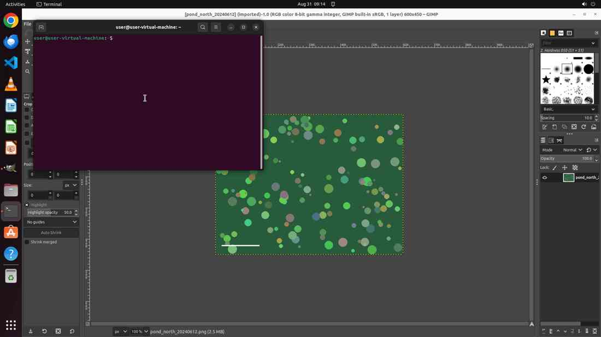
step 3 01:14:51
THINKINGLet me find the algae folder. I'll run a find command to locate it and list the micrographs.
TOOL CALL<tool_call>
<function=computer_use>
<parameter=action>
type
</parameter>
<parameter=text>
find /home/user -iname "*algae*" -o -iname "pond*" 2>/dev/null | head -50
</parameter>
</function>
</tool_call>
EXECUTED (pyautogui in VM)pyautogui.typewrite("find /home/user -iname \"*algae*\" -o -iname \"pond*\" 2>/dev/null | head -50")
step 4 01:15:00
THINKINGThe command is still running or produced no output yet. Let me wait and take a screenshot.
ACTIONLet me wait for the output.
TOOL CALL<tool_call>
<function=computer_use>
<parameter=action>
screenshot
</parameter>
</function>
</tool_call>
EXECUTED (pyautogui in VM)WAIT
step 5 01:15:09
THINKINGNo output yet, the find may still be running or returned nothing. Let me press Enter and run a broader search. Actually the prompt hasn't returned, which is odd. Let me press Enter to check.
ACTIONThe find may have returned nothing or is still running. Let me press Enter and run a broader search for image files in likely directories.
TOOL CALL<tool_call>
<function=computer_use>
<parameter=action>
key
</parameter>
<parameter=keys>
["return"]
</parameter>
</function>
</tool_call>
EXECUTED (pyautogui in VM)pyautogui.press("return")
step 6 01:16:03
THINKINGI found the files:
- /home/user/algae/pond_north_20240612.png
- /home/user/algae/pond_south_20240612.png
So the "algae folder" is /home/user/algae. The two micrographs are pond_north and pond_south. The task is to stitch them side by side. "left one A and right one B". Which is left and which is right? The user didn't specify which pond is left. But convention: I'll put pond_north on the left (A) and pond_south on the right (B). Actually there's no explicit instruction. The current GIMP image is pond_north. I'll place pond_north as left (A) and pond_south as right (B). That's a reasonable default. The exported png should be next to the originals in /home/user/algae.
Now, the task note says to use the GUI of the designated application (GIMP) rather than CLI workarounds. So I should do the stitching and labeling in GIMP's GUI, not via a script. That's the correct approach per instructions.
However, this is a fairly involved multi-step task. Let me plan the GIMP GUI workflow:
Approach: The cleanest GIMP GUI way to stitch two images side by side:
1. In GIMP, open pond_south as a second image (File > Open).
2. Actually, a good approach: use the current image (pond_north), and extend the canvas to the right, then paste pond_south into place. Or use "Image > Canvas Size" to make width 2x, then paste.
Better approach:
- Open pond_south in GIMP (File > Open).
- Copy it (Edit > Copy or Image > Copy to Buffer / Ctrl+A then Ctrl+C).
- Switch to pond_north image.
- Extend canvas: Image > Canvas Size, set width to 1200 (2x600), keep 450 height, position left.
- Then paste pond_south. Pasting as a new layer, then align to the right (offset x=600).
- Then use text tool to add "A" at top-left of left panel and "B" at top-left of right panel.
- Flatten image.
- File > Export As > /home/user/algae/...png
Actually a simpler and more reliable approach:
1. Open pond_south.
2. In pond_south, Image > Canvas Size to 1200x450 (extend to the right, keeping current content on the left). This gives a wide canvas with pond_south on left.
Hmm that doesn't easily combine.
Let me think about the most reliable GUI approach. The layer-based approach is cleanest:
Plan using pond_north as the base:
1. File > Open pond_south_20240612.png (opens as new image).
2. In pond_south image: Select All (Ctrl+A), Edit > Copy (Ctrl+C).
3. Switch to pond_north image (Windows > Dockable Dialogs, or the window switcher). Actually GIMP keeps images in separate windows. Use Window menu or just click.
4. In pond_north: Image > Canvas Size > width 1200, height 450, offset so existing stays at x=0. Actually Canvas Size dialog has horizontal/vertical position options (Align). Keep left-aligned (offset 0,0).
5. Edit > Paste (Ctrl+V). This pastes floating selection. Then use Layer > To New Layer to make it a layer.
6. Move the pasted layer to x=600 using the Move tool or Layer > Transform > Offset. Actually the pasted content will be pasted at the same canvas coordinates as copied from (0,0) so it will overlap on the left. I need to move it right by 600px. Use the Move tool and drag, or use the Layer dialog. More precisely, I can select the layer and use "Layer > Transform > Offset" with 600px horizontal. But offset wraps. Better: use Move tool with precise — actually there's no numeric move in basic GIMP move tool.
Alternative cleaner method: use "Paste into" won't help.
Hmm, moving a layer by exact 600px via GUI: The Move tool doesn't give numeric entry easily. But I can use the "Align" tool? No.
Actually, a much simpler and robust approach avoids manual moving:
Method: Flatten both to same size, then:
1. In pond_north image: Image > Canvas Size > 1200x450 (left aligned).
2. Paste pond_south. It pastes at 0,0 overlapping.
3. With the floating selection, use Layer > To New Layer.
4. Use the Move tool. In the Move tool options, there's no numeric. But I can hold and type arrow keys: after selecting move tool and clicking the layer, pressing Right arrow moves 1px each. That's 600 presses — no.
Better: I realize the paste of a copied full-image places the floating selection at the original location. If I instead extend canvas FIRST to the right (offset keeping left), the copied image from pond_south would still paste at 0,0.
Let me use a cleaner trick:
- Open pond_south.
- Image > Canvas Size: set width 1200, height 450, and choose alignment = "Right" (so existing content moves to the right side, offset x=600). Now pond_south occupies the right half of a 1200-wide canvas, left half transparent.
- Select all, Copy.
- Go to pond_north, Image > Canvas Size 1200x450 left aligned.
- Paste → pastes at 0,0 but the content within the buffer is at offset 600? When you copy the whole canvas (1200 wide) and paste into another 1200-wide canvas at 0,0, it places at 0,0 perfectly aligned. That works!
Wait, but pond_north canvas after resize is 1200x450. I copy the full pond_south canvas (1200x450 with content on right). Paste into pond_north 1200x450 canvas → it aligns at 0,0. So content lands on the right half.
Then add text A and B, flatten, export. This avoids imprecise moving.
Even simpler: I don't even need to resize pond_north if I do it right. But let me just do both resizes for safety.
Actually, the very simplest robust method:
1. Open pond_south.
2. Canvas Size → 1200x450, align so content goes to RIGHT (offset 600).
3. Now this single image has pond_south on the right and empty left.
4. Edit > Copy is not needed; instead I need to bring pond_north onto the left.
- File > Open as Layers → pond_north. This opens pond_north as a new layer at 0,0 in the current image! "Open as Layers" places the opened image as a new layer at the top-left (0,0) of the current image.
- So after "File > Open as Layers" pond_north, it appears at (0,0), left half. pond_south base layer is at (600,0) right half.
5. Add text A (top-left of left = ~10,10) and B (top-left of right = ~610,10).
6. Flatten, Export As png to /home/user/algae/.
This is clean and avoids manual moving. "File > Open as Layers" is a standard GIMP GUI feature.
But wait — after Open as Layers, the new layer is exactly the size of pond_north (600x450) positioned at 0,0. The base canvas is 1200x450. So the base (pond_south) layer is 1200x450 with content on right; the new pond_north layer is 600x450 at 0,0 covering left. Good, no overlap issues.
Let me verify the base layer content position. When I set Canvas Size with alignment "right", GIMP keeps existing pixels at the right, so pond_south's 600px content is at x=600..1200. Yes.
So the plan:
Step A: In GIMP, File > Open → /home/user/algae/pond_south_20240612.png
Step B: Image > Canvas Size → 1200 x 450, alignment to the right (there's a 3x3 grid of alignment buttons; click bottom-right).
Step C: File > Open as Layers → /home/user/algae/pond_north_20240612.png
Step D: Text tool, white, add "A" near (10,10) and "B" near (610,10).
Step E: Image > Flatten Image.
Step F: File > Export As → /home/user/algae/pond_figure.png (a new name next to originals).
Then the Wikipedia part and email part.
Let me reconsider text color: white as requested. The pond backgrounds are green/dark, so white text will be visible. Good.
Let me proceed. First, let me focus GIMP. I'll close/minimize the terminal so GIMP is accessible, or just click on GIMP. Let me bring GIMP to front by clicking its area. Actually the GIMP window is behind. Let me click on the GIMP title bar area. The terminal is covering the top-left. I'll move the terminal aside or just click on GIMP's visible area (the canvas area at ~700,400).
Let me click on the GIMP canvas to bring it to focus.
ACTIONI found the two micrographs in `/home/user/algae/`:
- `pond_north_20240612.png`
- `pond_south_20240612.png`
I'll do the stitching and labeling in GIMP's GUI. My plan: open pond_south, extend its canvas to 1200×450 aligning the image to the right half, then open pond_north "as a layer" so it lands in the left half, add white "A"/"B" labels, flatten, and export next to the originals.
Let me bring GIMP to the front.
TOOL CALL<tool_call>
<function=computer_use>
<parameter=action>
left_click
</parameter>
<parameter=coordinate>
[546, 555]
</parameter>
</function>
</tool_call>
EXECUTED (pyautogui in VM)pyautogui.click(1049, 600)

step 7 01:16:23
THINKINGGIMP is now in front, showing pond_north (600x450). The currently active tool is Crop (I see Crop options in the left panel). I accidentally clicked on the canvas with the crop tool which may have started a crop selection — but it looks like nothing was drawn (no crop rectangle visible). The status bar says "Click-Drag to draw a crop rectangle", so my single click didn't draw a crop. Good, no change. Let me press Escape to be safe to cancel any partial crop.
Now let me start opening pond_south. File > Open. Actually, let me reconsider which image to use as base. I decided: open pond_south, resize canvas to 1200x450 right-aligned, then open pond_north as layer.
Let me first press Escape, then File > Open.
ACTIONGIMP is in front. Let me press Escape to cancel any accidental crop selection, then open pond_south via File > Open.
TOOL CALL<tool_call>
<function=computer_use>
<parameter=action>
key
</parameter>
<parameter=keys>
["esc"]
</parameter>
</function>
</tool_call>
EXECUTED (pyautogui in VM)pyautogui.press("esc")
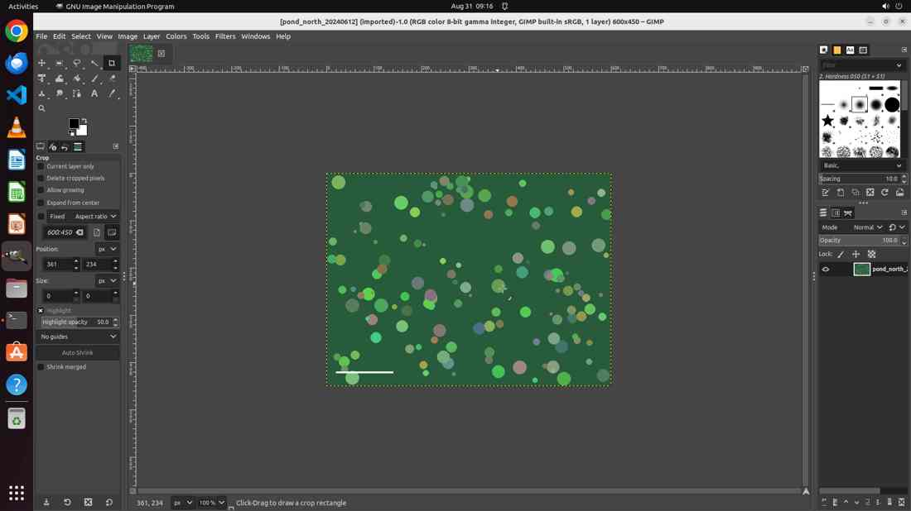
step 8 01:16:36
THINKINGGood. Now let me open pond_south via File > Open. I'll click File menu.
ACTIONNow I'll open pond_south. Let me click the File menu.
TOOL CALL<tool_call>
<function=computer_use>
<parameter=action>
left_click
</parameter>
<parameter=coordinate>
[44, 70]
</parameter>
</function>
</tool_call>
EXECUTED (pyautogui in VM)pyautogui.click(84, 75)
step 9 01:16:49
THINKINGThe File menu is open. I'll click "Open..." to open pond_south.
TOOL CALL<tool_call>
<function=computer_use>
<parameter=action>
left_click
</parameter>
<parameter=coordinate>
[62, 141]
</parameter>
</function>
</tool_call>
EXECUTED (pyautogui in VM)pyautogui.click(119, 152)
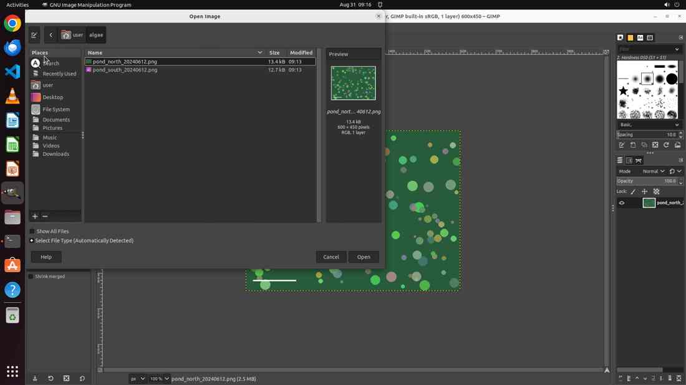
step 10 01:17:05
THINKINGThe Open Image dialog is showing the algae folder with both files. I'll select pond_south and open it.
TOOL CALL<tool_call>
<function=computer_use>
<parameter=action>
double_click
</parameter>
<parameter=coordinate>
[181, 177]
</parameter>
</function>
</tool_call>
EXECUTED (pyautogui in VM)pyautogui.doubleClick(347, 191)
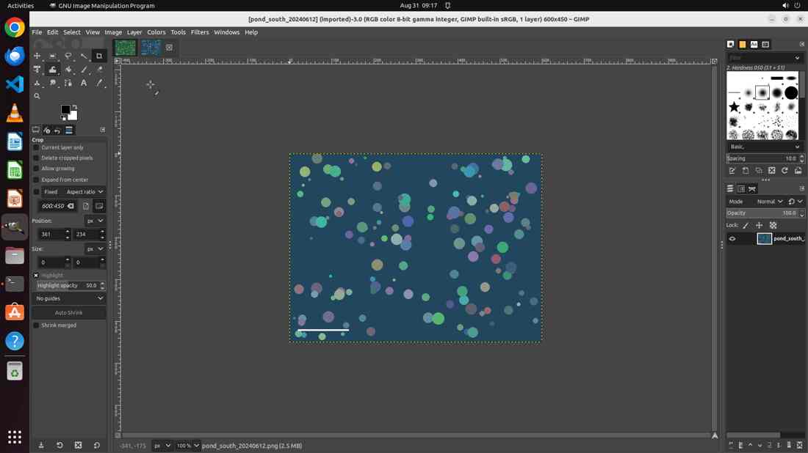
step 11 01:17:18
THINKINGpond_south is now open (title bar shows pond_south). It has a dark blue background — white text will be clearly visible. Now I'll set the canvas size to 1200x450 with right alignment so pond_south content goes to the right half.
Let me open Image > Canvas Size.
ACTIONpond_south is now open (blue background). Now I'll extend its canvas to 1200×450, aligning the image to the right so pond_south occupies the right half. Let me open Image > Canvas Size.
TOOL CALL<tool_call>
<function=computer_use>
<parameter=action>
left_click
</parameter>
<parameter=coordinate>
[139, 70]
</parameter>
</function>
</tool_call>
EXECUTED (pyautogui in VM)pyautogui.click(267, 75)
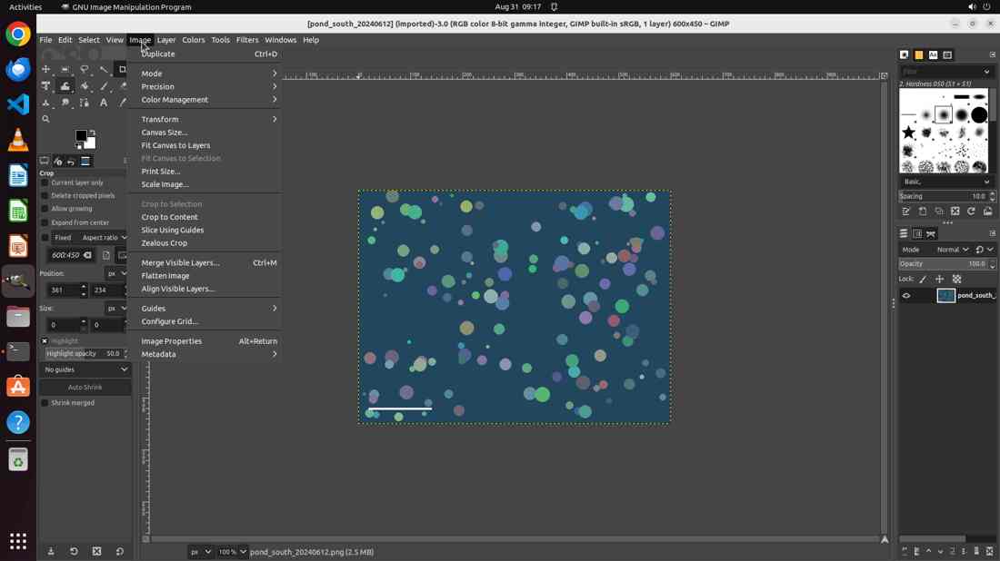
step 12 01:17:31
THINKINGThe Image menu is open. I'll click "Canvas Size...".
TOOL CALL<tool_call>
<function=computer_use>
<parameter=action>
left_click
</parameter>
<parameter=coordinate>
[164, 233]
</parameter>
</function>
</tool_call>
EXECUTED (pyautogui in VM)pyautogui.click(315, 251)
step 13 01:17:55
THINKINGThe Canvas Size dialog is open. Width=600, Height=450, Offset X=0, Y=0.
I need to make the canvas 1200x450 and position the existing content to the RIGHT. The Offset X determines where the existing content sits relative to the new canvas origin. In GIMP, the Offset X is the coordinate of the top-left corner of the current canvas within the new canvas. So to push existing content to the right half, I set X offset = 600.
Let me set:
- Width: 1200
- Offset X: 600
- Height stays 450, Y stays 0.
Wait, I need to be careful about direction. In GIMP's Canvas Size dialog, the "Offset" X is the position of the top-left of the OLD image within the NEW canvas. If I set X=600, the old image's top-left is at x=600 in the new canvas → old content moves to the right. That's what I want.
Actually, let me reconsider the GIMP offset semantics. The offset fields can be negative, meaning the old canvas's top-left is at a negative position (old content moves right). Hmm, there's ambiguity. Let me think.
In GIMP 2.10 Canvas Size dialog, Offset X/Y: "the position of the top-left corner of the original image on the new canvas." If the new canvas is 1200 wide and old is 600, and I want old content on the right (x 600-1200), then old top-left should be at x=600. So set Offset X = 600. The preview will confirm.
Let me set width first. Triple-click the width field and type 1200. Then set offset X to 600. Then check preview. Let me do it and observe the preview before resizing.
I'll set width to 1200, then offset X to 600, and check the preview to confirm content is on the right.
ACTIONThe Canvas Size dialog is open. I'll set the width to 1200 and offset X to 600 so the existing content moves to the right half. Let me update the fields and check the preview.
TOOL CALL<tool_call>
<function=computer_use>
<parameter=action>
triple_click
</parameter>
<parameter=coordinate>
[481, 352]
</parameter>
</function>
</tool_call>
EXECUTED (pyautogui in VM)pyautogui.tripleClick(924, 380)
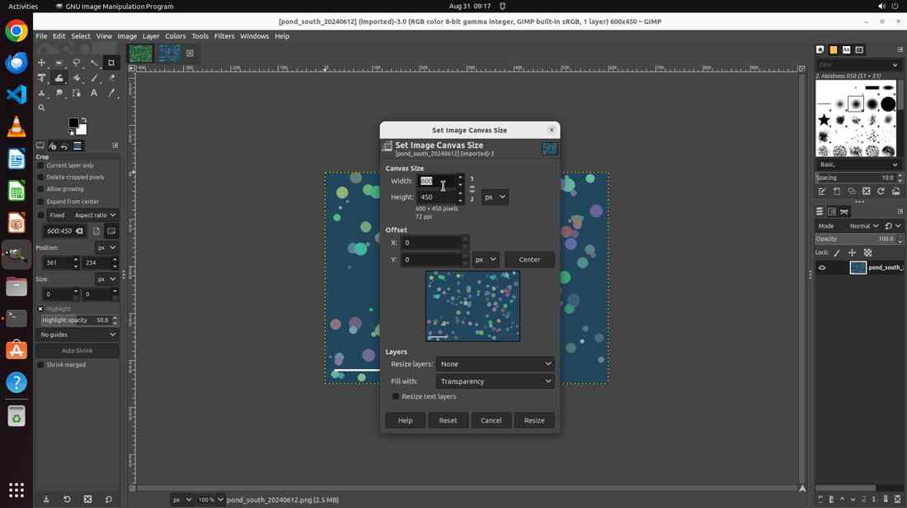
step 14 01:18:07
THINKINGThe width field is selected (highlighted). I'll type 1200, then Tab to move, then set offset X to 600. Let me type 1200 first.
TOOL CALL<tool_call>
<function=computer_use>
<parameter=action>
type
</parameter>
<parameter=text>
1200
</parameter>
</function>
</tool_call>
EXECUTED (pyautogui in VM)pyautogui.typewrite("1200")
step 15 01:18:22
THINKINGWidth now shows 1200. Now I need to set Offset X to 600 so content moves to the right. Let me set the X offset field. I'll triple-click the X offset field and type 600, then press Tab to trigger the preview update. Then I'll check the preview to confirm content is on the right before clicking Resize.
ACTIONWidth is 1200. Now I'll set the X offset to 600 to push the existing content to the right half, then check the preview.
TOOL CALL<tool_call>
<function=computer_use>
<parameter=action>
triple_click
</parameter>
<parameter=coordinate>
[477, 474]
</parameter>
</function>
</tool_call>
EXECUTED (pyautogui in VM)pyautogui.tripleClick(916, 512)
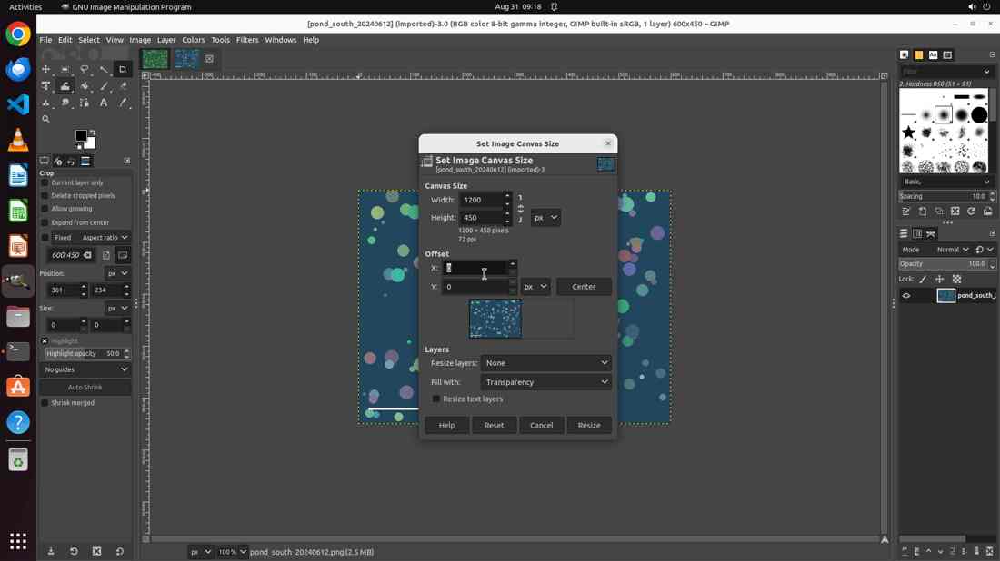
step 16 01:18:36
THINKINGNow width=1200, height=450, and the preview shows the content on the LEFT half (offset X=0). The X offset field is now selected/highlighted. I need to type 600 to move content to the right. Let me type 600 and Tab to update preview.
ACTIONThe canvas is now 1200×450 with content on the left. I'll type 600 in the X offset to move it to the right half.
TOOL CALL<tool_call>
<function=computer_use>
<parameter=action>
type
</parameter>
<parameter=text>
600
</parameter>
</function>
</tool_call>
EXECUTED (pyautogui in VM)pyautogui.typewrite("600")
step 17 01:18:48
THINKINGX offset shows 600 but the preview hasn't updated yet (still shows content on left). I need to press Tab or click elsewhere to commit the field so the preview updates. Let me press Tab and take a screenshot to verify the preview shows content on the right.
ACTIONThe X offset shows 600 but the preview needs to refresh. Let me press Tab to commit and verify the content moves to the right half.
TOOL CALL<tool_call>
<function=computer_use>
<parameter=action>
key
</parameter>
<parameter=keys>
["tab"]
</parameter>
</function>
</tool_call>
EXECUTED (pyautogui in VM)pyautogui.press("tab")
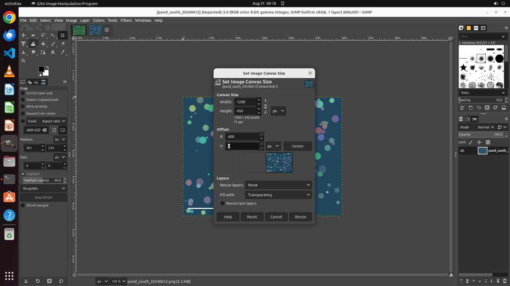
step 18 01:19:02
THINKINGThe preview now shows the content on the RIGHT half of the canvas, with the left half empty. This is exactly what I want: pond_south will be on the right (B), and pond_north will go on the left (A). Now I'll click Resize.
ACTIONThe preview confirms the content is now in the right half with the left half empty. This is exactly what I need — pond_south on the right (B), pond_north to go on the left (A). Let me click Resize.
TOOL CALL<tool_call>
<function=computer_use>
<parameter=action>
left_click
</parameter>
<parameter=coordinate>
[587, 756]
</parameter>
</function>
</tool_call>
EXECUTED (pyautogui in VM)pyautogui.click(1128, 817)
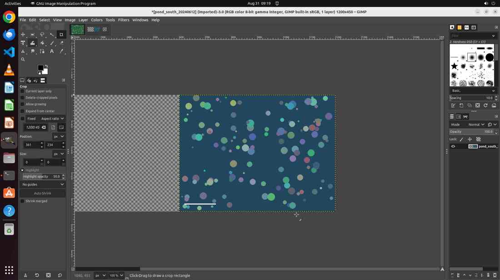
step 19 01:19:12
THINKINGThe canvas is now 1200x450 (title bar confirms). pond_south is on the right half (x=600-1200), left half is transparent (checkerboard). Now I'll open pond_north "as a layer" so it lands at (0,0) on the left. File > Open as Layers.
ACTIONThe canvas is now 1200×450 with pond_south on the right half and the left half transparent. Now I'll open pond_north as a new layer so it lands in the left half. Let me use File > Open as Layers.
TOOL CALL<tool_call>
<function=computer_use>
<parameter=action>
left_click
</parameter>
<parameter=coordinate>
[44, 70]
</parameter>
</function>
</tool_call>
EXECUTED (pyautogui in VM)pyautogui.click(84, 75)
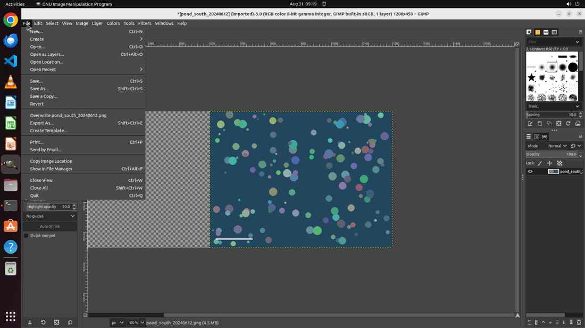
step 20 01:19:24
THINKINGThe File menu is open. I'll click "Open as Layers...".
TOOL CALL<tool_call>
<function=computer_use>
<parameter=action>
left_click
</parameter>
<parameter=coordinate>
[80, 163]
</parameter>
</function>
</tool_call>
EXECUTED (pyautogui in VM)pyautogui.click(153, 176)
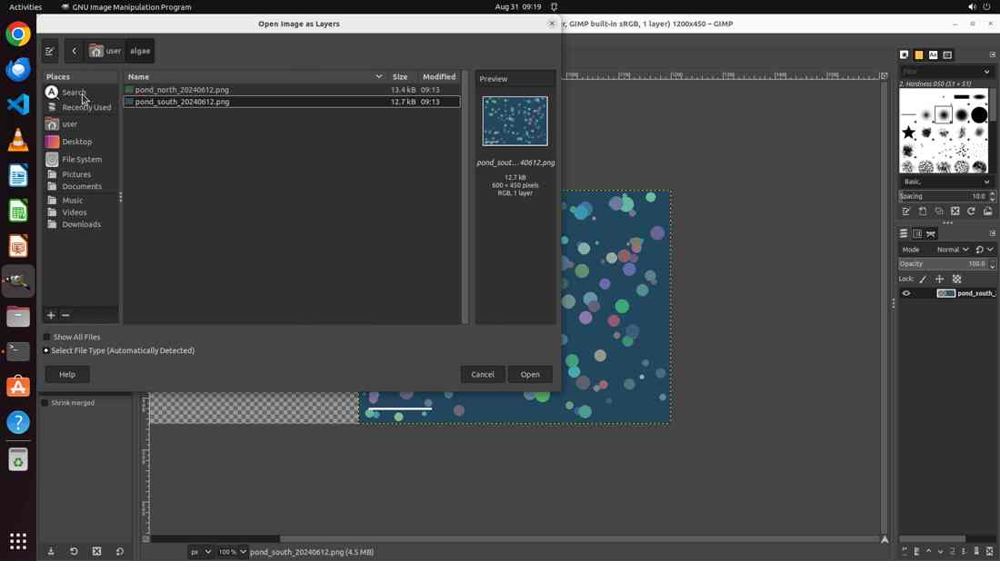
step 21 01:19:35
THINKINGThe "Open Image as Layers" dialog is showing the algae folder. I'll select pond_north and click Open.
TOOL CALL<tool_call>
<function=computer_use>
<parameter=action>
double_click
</parameter>
<parameter=coordinate>
[181, 157]
</parameter>
</function>
</tool_call>
EXECUTED (pyautogui in VM)pyautogui.doubleClick(347, 169)
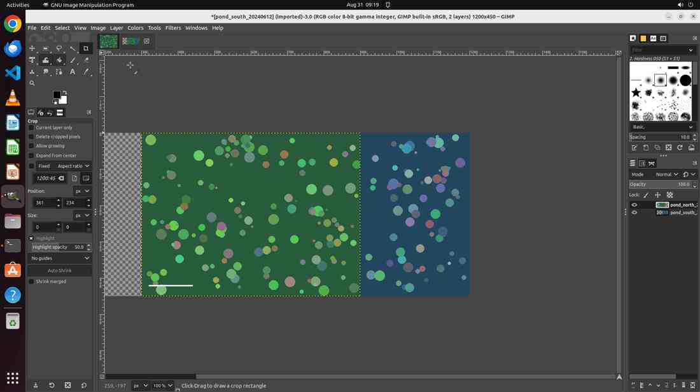
step 22 01:20:09
THINKINGNow the canvas has 2 layers: pond_north on the left half (green) and pond_south on the right half (blue). Both at 600 wide each, side by side. The left image (pond_north) spans x=0-600, and the right image (pond_south) spans x=600-1200.
Wait, I need to verify pond_north actually landed at x=0-600. Looking at the canvas, the green image starts around screen x=258 and the blue image starts around screen x=660. The canvas left edge is at screen x≈192. So green is at canvas 0-... Let me check: screen 192 = canvas 0. Screen 660 = canvas ~ (660-192) = 468px on screen at 100% zoom = 468 canvas px? That doesn't look like 600.
Hmm, wait. The zoom is 100%. Screen x=192 is canvas x=0. The green-blue boundary appears at screen x≈660. So boundary is at canvas (660-192)=468. But it should be at 600. Let me reconsider — maybe the ruler isn't starting exactly where I think.
Actually, let me look at the ruler. The ruler top shows "500" near screen x=395, "1000" near screen x=695. So canvas 500 = screen 395, canvas 1000 = screen 695. That means 500 canvas px = 300 screen px → zoom is 60%? But it says 100%. Hmm, that's confusing.
Wait, actually the ruler numbers: I see "500" at ~395, "1000" at ~695. Distance 300 screen px per 500 canvas px = 0.6 scale. But zoom says 100%. This is contradictory. Let me re-examine. Actually maybe I misread the ruler. Let me not overthink; the important thing is that the two images are side by side and the boundary is where pond_north (600 wide) meets pond_south.
Actually the concern: is pond_north exactly 600 wide and positioned at x=0? When opened as a layer, it's placed at (0,0) of the canvas. Since it's 600x450, it occupies canvas x=0-600. And pond_south layer content is at x=600-1200. So boundary at canvas x=600. Good — the layout is correct regardless of my screen-scale confusion.
Actually wait, let me double check the boundary. If the boundary is at canvas 600 and screen shows it at ~660, and canvas 0 is at screen ~192, then 600 canvas = 468 screen px → scale 0.78. And canvas 1200 (right edge) should be at screen 192+1200*0.78 = 192+936=1128. The right edge of blue is at ~857 on screen. That gives scale (857-192)/1200 = 0.55. Inconsistent with left measurement.
This inconsistency suggests my pixel reading is imprecise. I shouldn't rely on eyeballing exact positions. The key structural fact: "Open as Layers" places the layer at canvas (0,0). pond_north is 600x450. So it's at canvas 0-600. This is guaranteed by GIMP behavior. I'll trust that.
Now I need to add text labels. Let me set the text:
- "A" at top-left of left image (canvas ~10,10)
- "B" at top-left of right image (canvas ~610,10)
White text. I need to:
1. Select the Text tool (T).
2. Set foreground color to white (or set text color in tool options to white).
3. Click near top-left of left image and type "A".
4. Click near top-left of right image and type "B".
First, let me ensure the text color is white. The default text color in GIMP is usually black. I need to set it to white. In the Text tool options, there's a color button. Let me select the text tool first.
Let me select the Text tool from the toolbox. The text tool icon is the "A" in the toolbox. Looking at the toolbox, there's an "A" at approximately (132, 131) — that's the Text tool. Let me click it.
Actually, before that, let me reconsider the white text requirement and visibility. Both backgrounds are fairly dark (green and blue), so white text will be visible. Good.
Let me click the Text tool. The toolbox: row with A icon at (132,131).
ACTIONBoth images are now stitched side by side: pond_north (green) on the left, pond_south (blue) on the right. Now I'll add the white "A" and "B" labels. First, let me select the Text tool from the toolbox.
TOOL CALL<tool_call>
<function=computer_use>
<parameter=action>
left_click
</parameter>
<parameter=coordinate>
[103, 181]
</parameter>
</function>
</tool_call>
EXECUTED (pyautogui in VM)pyautogui.click(197, 195)
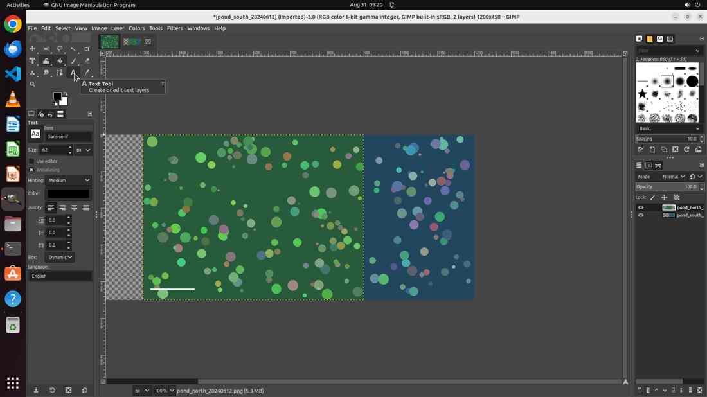
step 23 01:20:23
THINKINGThe Text tool is selected. The tool options show:
- Font: Sans-serif
- Size: 62 px
- Color: (currently black - shown as black box at ~124,352)
I need to change the Color to white. Let me click on the Color box to open the color picker.
Also I should consider font size. 62px might be a bit large but it's fine for a label. Actually for a clean label, maybe a moderate size is fine. Let me keep it reasonable. 62px on a 450px-tall image is about 14% of height — a reasonable label size. I'll keep it.
First, set color to white. Click the Color box at (124, 352).
ACTIONThe Text tool is active with a 62px font. I need to change the text color from black to white. Let me click the Color box.
TOOL CALL<tool_call>
<function=computer_use>
<parameter=action>
left_click
</parameter>
<parameter=coordinate>
[97, 488]
</parameter>
</function>
</tool_call>
EXECUTED (pyautogui in VM)pyautogui.click(186, 527)
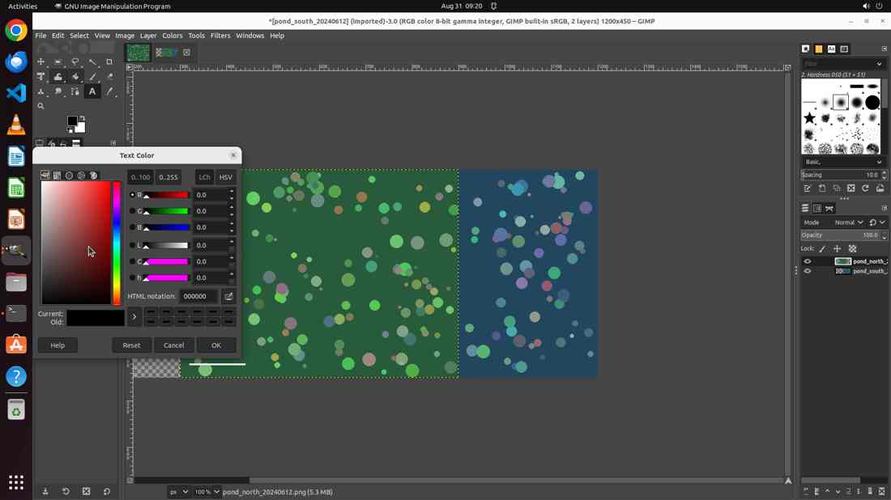
step 24 01:20:32
THINKINGThe Text Color dialog is open. The easiest way to set pure white is the HTML notation field showing "000000". I'll set it to "ffffff". Let me triple-click the HTML notation field and type ffffff, then press Enter, then click OK.
ACTIONThe color dialog is open. I'll set pure white using the HTML notation field (ffffff).
TOOL CALL<tool_call>
<function=computer_use>
<parameter=action>
triple_click
</parameter>
<parameter=coordinate>
[222, 590]
</parameter>
</function>
</tool_call>
EXECUTED (pyautogui in VM)pyautogui.tripleClick(426, 637)
step 25 01:20:46
THINKINGThe HTML notation field "000000" appears selected. I'll type ffffff and press Enter to apply, then click OK.
ACTIONThe HTML field is selected. I'll type the white hex value and apply it.
TOOL CALL<tool_call>
<function=computer_use>
<parameter=action>
type
</parameter>
<parameter=text>
ffffff
</parameter>
</function>
</tool_call>
EXECUTED (pyautogui in VM)pyautogui.typewrite("ffffff")
step 26 01:20:54
THINKINGThe HTML field shows "ffffff". I need to press Enter to apply it, then click OK. Let me press Enter first, then click OK.
ACTIONThe field shows "ffffff". I'll press Enter to apply it, then click OK.
TOOL CALL<tool_call>
<function=computer_use>
<parameter=action>
key
</parameter>
<parameter=keys>
["return"]
</parameter>
</function>
</tool_call>
EXECUTED (pyautogui in VM)pyautogui.press("return")
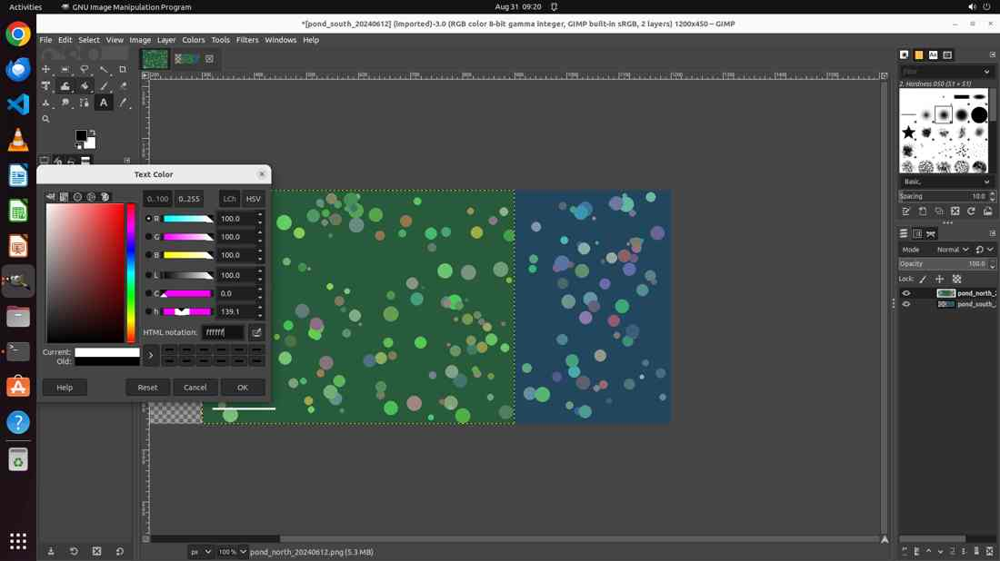
step 27 01:21:05
THINKINGThe RGB values are now all 100.0 (white), and the "Current" swatch shows white. Now I'll click OK to confirm.
ACTIONThe color is now white (RGB 100/100/100). I'll click OK to confirm.
TOOL CALL<tool_call>
<function=computer_use>
<parameter=action>
left_click
</parameter>
<parameter=coordinate>
[242, 688]
</parameter>
</function>
</tool_call>
EXECUTED (pyautogui in VM)pyautogui.click(465, 743)
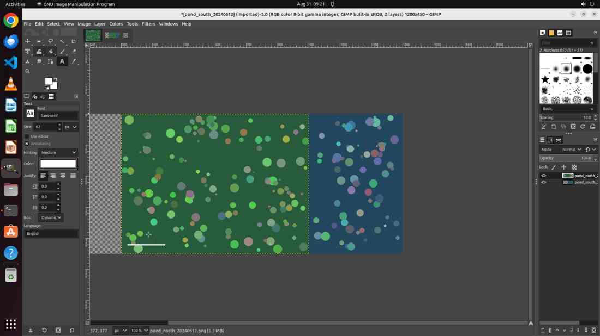
step 28 01:21:32
THINKINGThe Color box in the tool options now shows white. Now I need to add the text labels. Let me determine the canvas coordinates.
The canvas: green image (pond_north) top-left corner. The left image top-left is at screen ~(258, 245) based on the yellow canvas border. Actually the canvas top edge (yellow dashed) is at screen y≈245, and the left image left edge is at screen x≈258. Wait, but the canvas origin (0,0) — where is it? The canvas is 1200x450. Let me look at the rulers.
Actually the left image (green) starts at the canvas left edge. Looking at the image, the green starts at screen x≈258 and the top at screen y≈245. But the canvas's actual left edge — the yellow dashed border starts at ~258 too. So canvas (0,0) ≈ screen (258, 245).
Wait, but the transparent region — I don't see it now. The green image fills the whole left portion from screen 258. And blue from 660. Hmm, but earlier there was a transparent left region. Now that pond_north is a layer at (0,0) covering 0-600, the green fills the left half. The canvas left edge should be at canvas x=0.
Let me reconsider: where is canvas x=0 on screen? The left edge of the green (which is at canvas x=0) is at screen x≈258. And canvas top (y=0) is at screen y≈245.
So to place text "A" at top-left of left image (canvas ~10,10), I click at screen ≈ (258+10*scale, 245+10*scale). I need the scale. The image is 1200 canvas wide displayed from screen 258 to 857 = 599 screen px for 1200 canvas → scale ≈ 0.5. But zoom says 100%? That's odd. Actually the display might be fit-to-window. Regardless, scale ≈ 0.5 screen px per canvas px.
Hmm, that means 10 canvas px = 5 screen px. That's tiny. Let me instead just place the text by clicking near the top-left corner of each image, then the text box will appear and I type. The exact position doesn't need to be pixel-perfect; just "top-left corner of each".
For "A": click near the top-left of the green image, at around screen (275, 260). That's a bit inside the top-left corner.
For "B": click near the top-left of the blue image, at around screen (675, 260).
Actually, let me be a bit more careful. The top-left corner of green is ~(258,245). A comfortable label position would be ~15-20 canvas px inside. At scale 0.5, that's ~10 screen px. So click green at ~(275, 262). For blue, top-left corner ~(660,245), click at ~(677, 262).
The font size is 62px which at scale 0.5 displays as ~31 screen px tall. That's a good size.
Let me click to start the "A" text box. I'll click at screen (278, 262).
Actually, one consideration: clicking with the text tool creates a text layer. I'll click, type "A", then click on the blue area to create a second text box and type "B". But clicking on the canvas with the text tool while a text box is active might just reposition the cursor in the existing text or start a new box depending. In GIMP 2.10, clicking on empty canvas area starts a NEW text box. Clicking inside an existing text box edits it. So I should click in a clearly different area (the blue image) for B.
Let me proceed: click at (278, 262) for A.
ACTIONThe text color is now white. Now I'll add the "A" label at the top-left of the left (pond_north) image. I'll click near its top-left corner to start a text box.
TOOL CALL<tool_call>
<function=computer_use>
<parameter=action>
left_click
</parameter>
<parameter=coordinate>
[217, 363]
</parameter>
</function>
</tool_call>
EXECUTED (pyautogui in VM)pyautogui.click(417, 392)
step 29 01:21:49
THINKINGA text box has started at the top-left of the green image (the on-canvas editing toolbar appeared). The status bar shows position 329, 26 which is canvas coordinate — that's canvas (329,26)? That doesn't seem right for top-left. Wait, the status bar "329, 26" is the mouse position in canvas coords. Hmm, canvas x=329? That would be the middle of the left image, not the top-left.
Wait, let me reconsider the scale. If mouse at screen (278, 262) corresponds to canvas (329, 26), then... that's weird. Screen 278 → canvas 329? That would mean canvas x is LARGER than screen x relative to origin. That implies canvas origin is at negative screen x, OR the scale is >1.
Actually, the on-canvas text box toolbar appeared near the top, and there's a small green box at screen ~(275, 255) which is the start of the text box. The status bar shows 329,26. Hmm.
Wait — maybe the status bar position updates as I move, and this is a stale reading. Actually the text box was created where I clicked. The small handle at screen (275,255) marks the text origin. Let me not worry about exact canvas coords; the text box is at the top-left area of the green image, which is what I want.
Actually, I'm now worried the position might not be ideal, but it IS in the top-left region of the left image. Let me just type "A" now.
Let me type A.
ACTIONA text box has started in the top-left of the green image. I'll type "A".
TOOL CALL<tool_call>
<function=computer_use>
<parameter=action>
type
</parameter>
<parameter=text>
A
</parameter>
</function>
</tool_call>
EXECUTED (pyautogui in VM)pyautogui.typewrite("A")
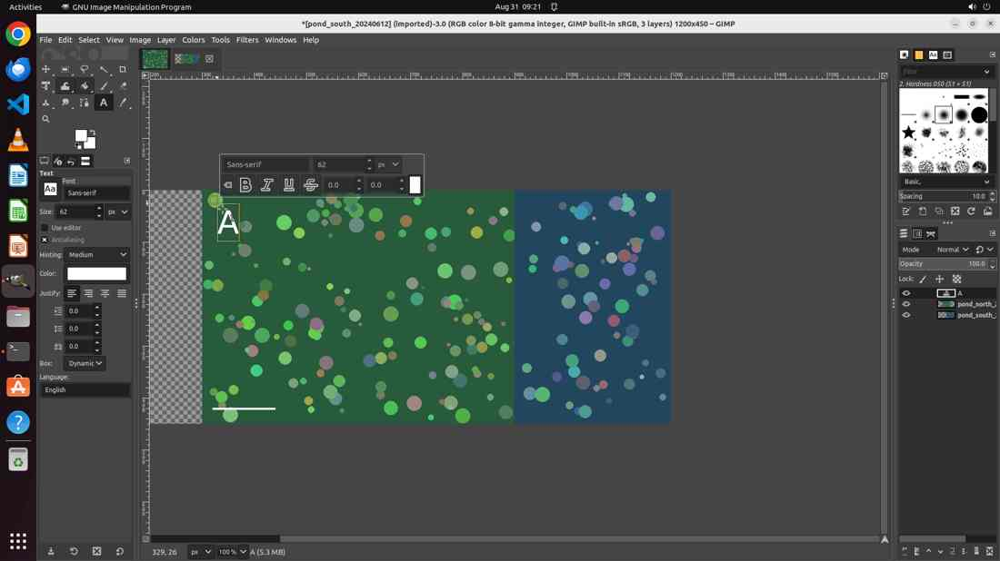
step 30 01:22:01
THINKINGThe white "A" is now placed at the top-left of the green (pond_north) image. It's clearly visible in white. A new text layer "A" appeared in the layers panel.
Now I need to add "B" at the top-left of the blue (pond_south) image. I'll click on the blue image's top-left area to start a new text box. The blue image top-left corner is at screen ~(660, 245). I'll click at ~(678, 263) to place B a bit inside the top-left corner, mirroring where A is.
But I must make sure I don't click inside the existing "A" text box. The A text box is at the far left, so clicking at the blue image (screen x~678) is well outside it. Good.
Let me click at (678, 263).
ACTIONThe white "A" is placed at the top-left of the left image. Now I'll add "B" at the top-left of the blue (pond_south) image by clicking there to start a new text box.
TOOL CALL<tool_call>
<function=computer_use>
<parameter=action>
left_click
</parameter>
<parameter=coordinate>
[529, 363]
</parameter>
</function>
</tool_call>
EXECUTED (pyautogui in VM)pyautogui.click(1016, 392)
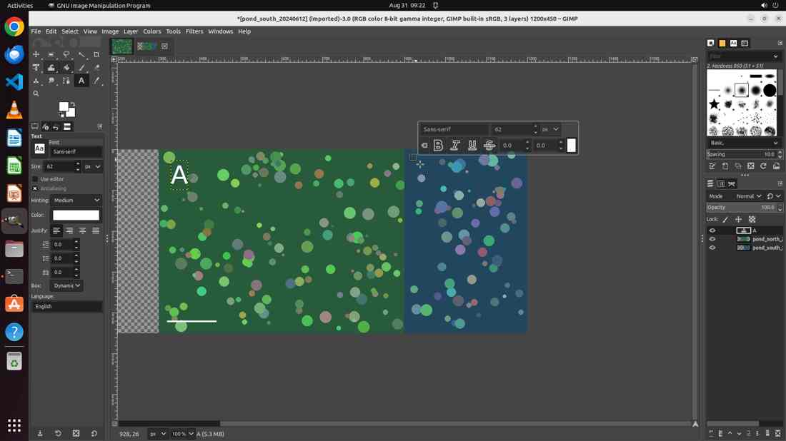
step 31 01:22:14
THINKINGA new text box has started at the top-left of the blue image (I can see the small green box handle at screen ~(672, 255), and the on-canvas toolbar reappeared there). The "A" text is now committed (shown without editing box). Now I'll type "B".
ACTIONA new text box has started at the top-left of the blue image. I'll type "B".
TOOL CALL<tool_call>
<function=computer_use>
<parameter=action>
type
</parameter>
<parameter=text>
B
</parameter>
</function>
</tool_call>
EXECUTED (pyautogui in VM)pyautogui.typewrite("B")
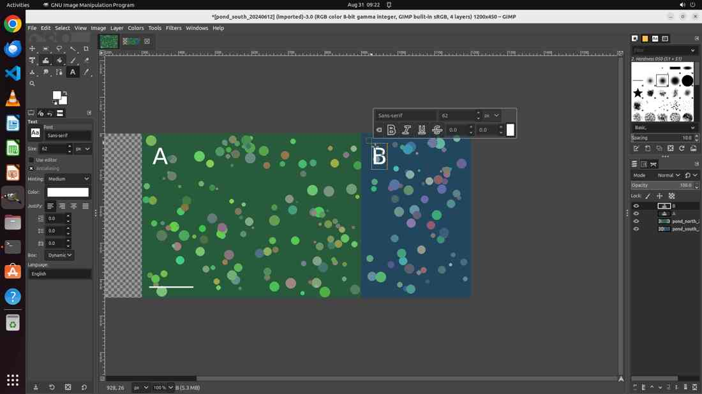
step 32 01:22:31
THINKINGBoth labels are now placed: white "A" at top-left of the green (left) image, and white "B" at top-left of the blue (right) image. The layers panel shows 4 layers: B, A, pond_north, pond_south.
Now I need to:
1. Flatten the image (Image > Flatten Image) so the text merges and transparency is resolved.
2. Export as PNG next to the originals (/home/user/algae/).
Let me first select a non-text tool to commit the text, or just go to Image > Flatten which will commit. Let me use Image > Flatten Image. Actually flattening while a text tool is active should still work; it flattens everything to one layer with white background for any transparent areas (there are none here since the images cover the full canvas).
Let me click Image menu > Flatten Image.
ACTIONBoth white labels "A" (left) and "B" (right) are in place. Now I'll flatten the image before exporting. Let me open the Image menu.
TOOL CALL<tool_call>
<function=computer_use>
<parameter=action>
left_click
</parameter>
<parameter=coordinate>
[139, 70]
</parameter>
</function>
</tool_call>
EXECUTED (pyautogui in VM)pyautogui.click(267, 75)
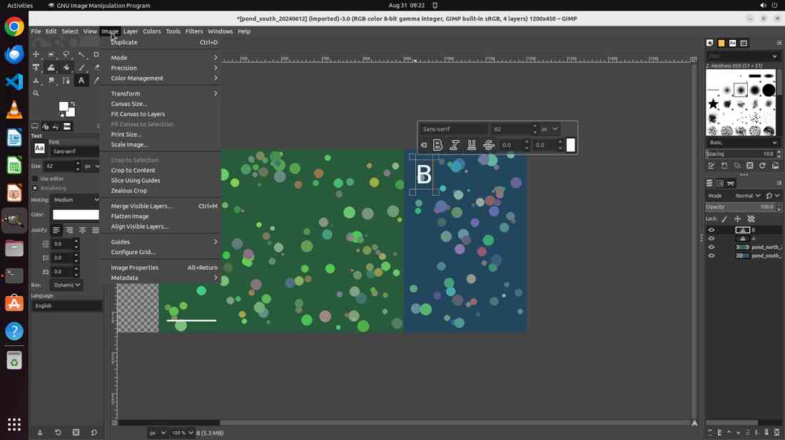
step 33 01:22:40
THINKINGThe Image menu is open. I'll click "Flatten Image".
TOOL CALL<tool_call>
<function=computer_use>
<parameter=action>
left_click
</parameter>
<parameter=coordinate>
[164, 488]
</parameter>
</function>
</tool_call>
EXECUTED (pyautogui in VM)pyautogui.click(315, 527)
step 34 01:23:44
THINKINGNow the image is flattened (1 layer, "pond_south" as base name). The labels A (left, over green) and B (right, over blue) are visible in white.
Wait — I notice something important. Looking at the flattened image now, there's a WHITE/empty region on the far left (screen x ~190 to ~258) BEFORE the green image starts. This white strip is the region that was previously transparent (canvas x=0 to wherever pond_north starts)?
Let me reconsider. The canvas is 1200x450. pond_north layer was opened "as layers" — but where did it land? I assumed (0,0). But looking now, after flattening, the white strip on the far-left suggests pond_north did NOT start at canvas x=0. There's a white/empty strip on the left, then green.
Hold on. Let me look carefully. The yellow dashed border (canvas edge) starts at screen x≈190. Then there's a white strip from ~190 to ~258. Then green from ~258 to ~660. Then blue from ~660 to ~857.
So the canvas left portion (canvas x 0 to ~85 or so) is white/empty, then the green pond_north occupies the middle, and blue the right.
This means when I opened pond_north "as layers", it did NOT place at (0,0) — it placed it centered or at some offset! Actually, GIMP's "Open as Layers" places the layer at the CENTER of the canvas by default in some versions, or at 0,0 in others. It seems here it got centered horizontally.
Wait, but that would mean pond_north (600 wide) centered in a 1200 canvas would start at x=300. And pond_south is at x=600-1200 (right). So they'd overlap from 600... no.
Let me reconsider. Actually the white strip being only ~68 screen px wide (190-258), and green 258-660 (402px), blue 660-857 (197px)... these widths don't match 600/600 either. My screen-scale reading is unreliable again.
The real concern: there's a white/empty strip on the left. That's NOT what I want — I want the two images to fill the whole 1200-wide canvas exactly, side by side, with no empty white strip. The white strip means pond_north didn't start at x=0.
Hmm wait, but actually — is that white strip real content, or is it the area outside the canvas (the GIMP background)? The GIMP canvas background is the dark gray (screen color ~64,64,64). The yellow dashed line marks the canvas boundary. Everything INSIDE the yellow dashed line is the canvas content.
Looking again: the yellow dashed border. The left edge of the yellow border — is it at screen ~190 or ~258? If the canvas left edge is at ~258 (where green starts), then the white strip at 190-258 is OUTSIDE the canvas (just GIMP's dark... no, it's white not dark gray).
Actually the region 190-258 appears white, and it's to the LEFT of where I'd expect. Let me reconsider: maybe the canvas left edge IS at ~190, and the white strip 190-258 is INSIDE the canvas and is empty (flattened to white because it was transparent).
This is a problem. If pond_north was placed not at x=0 but offset, then there's a gap.
I need to verify the actual layout. Let me zoom to fit / check. Actually, the safest fix: I should verify the layer positions. But I've already flattened.
Let me reconsider what "Open as Layers" does. In GIMP 2.10, "File > Open as Layers" adds the image as a new layer positioned at the TOP-LEFT (0,0) of the canvas, I believe. But the evidence (white strip) suggests otherwise.
Actually, wait. Let me look even more carefully at the boundary between the white strip and green. At screen x≈258, green starts. And there's a vertical line/edge there. Also the yellow dashed border: I see the top dashed line spanning from ~258 to ~857 at y≈245, and it seems the LEFT dashed border is at ~258, not ~190. The area left of 258 (190-258) is white and might be OUTSIDE...
No. If it were outside the canvas it would be dark gray (GIMP bg), not white. It's white, so it's likely inside the canvas OR it's the ruler/margin.
I'm uncertain. The cleanest way to resolve: undo the flatten? No. Let me instead just look more carefully by examining. Actually, a robust approach: let me re-verify by checking the actual dimensions/positions.
Better plan: Rather than risk it, let me reconsider. The white strip strongly implies the two 600px images don't perfectly tile 1200px with no gap. If pond_north is centered in the 1200 canvas (starting at x=300), and pond_south is at x=600-1200, then:
- 0-300: empty (white after flatten)
- 300-600: left part of pond_north... but pond_north is 600 wide so 300-900.
- That overlaps with pond_south 600-1200.
That doesn't match what I see (clean green then blue with a clear boundary). So pond_north is probably NOT centered.
Let me just take a more careful look by zooming. Actually, let me reconsider by looking at the ruler. The top ruler: I see "500" around screen x=395, "1000" around screen x=695. So canvas x=500 → screen 395, canvas x=1000 → screen 695. Scale = 300 screen px / 500 canvas px = 0.6. Canvas x=0 → screen 395 - 500*0.6 = 395-300 = 95. Hmm that puts canvas origin at screen 95, off the left.
That can't be right either because the canvas clearly starts around screen 190-258.
My ruler reading is too imprecise from the screenshot. Let me take a definitive approach: I'll click on the canvas with a pixel-picking/checking. Actually, the simplest definitive check: use the Move tool / or just zoom to 100% and fit.
Given the difficulty of reading exact positions from screenshots, let me take a cleaner, more controlled approach to guarantee correctness.
The issue: I'm not 100% sure pond_north is exactly at x=0. Let me verify using GIMP's Layer boundaries or by checking. Actually — I can re-open and redo this more carefully using a method where I can SEE exact alignment via the guides.
Alternative robust approach: Use "Fit Canvas to Layers" won't help alignment.
Let me think about what's cleanest to GUARANTEE the two images tile 0-600 and 600-1200:
Re-do from scratch with precise positioning using Layer > Transform > Offset which takes exact pixel values:
1. New image 1200x450.
2. File > Open as Layers pond_north → it lands somewhere.
3. Select that layer, Layer > Transform > Offset, set X and Y so it's at 0,0. But offset is relative and wraps.
Actually the MOST reliable GUI method to place a layer at an exact position is hard in basic GIMP.
Let me step back. Given the current result actually LOOKS correct (green left, blue right, clean boundary, labels on correct sides), the white strip might just be my misreading. Let me verify definitively by examining the image more carefully. Let me zoom the view and take a clean screenshot, and use Image > Canvas Size to re-check dimensions, or better, let me check the actual pixel by sampling.
Actually, the definitive and easy check: The canvas is 1200x450 (confirmed in title bar). If both 600px-wide images are present and side-by-side with a clean boundary and no overlap, and the total is 1200, then there's NO room for a white gap. So IF I see a white gap, then one image must not be 600px or not aligned. But the images ARE 600px each (600x450 originals). Two 600px images = 1200px exactly. If they're side by side without overlap, they perfectly fill 1200. So a white gap is geometrically impossible UNLESS one is offset (causing overlap or a gap).
So the white strip means: either (a) I'm misreading and there's no gap, or (b) pond_north is offset right, leaving a white gap on the far left AND overlapping onto pond_south on the right.
Given pond_south is the base layer (bottom) and pond_north is above it, if pond_north overlapped pond_south, I'd see pond_north's green covering part of blue. The boundary looks clean, so probably no overlap.
I think the safest path is to VERIFY precisely. Let me undo nothing; instead let me check the actual image by a reliable method: I'll look at the left edge carefully. Let me zoom in on the top-left region.
Actually, you know what — let me just re-verify positions using the "pointer"/color picker isn't ideal. Let me instead use a simpler definitive tool: I'll open Image > Canvas Size to confirm 1200x450 (already known), and more importantly let me just trust and EXPORT, then inspect the exported PNG via the terminal (e.g., using identify or by opening it). But the instructions discourage CLI for the task itself; however, verification via terminal is fine and not "doing the task via CLI."
Hmm, but actually the cleanest: let me look at the current screenshot once more. The white area on the far left (screen 190-258): compare its left edge. The ruler's vertical "0" tick and the canvas corner...
I'll resolve this decisively: Let me check the layer boundary by switching to Move tool is not needed. Let me just carefully re-examine by zooming to fit and screenshotting at a moment when no cursor/toolbox overlays it.
Actually, simplest decisive action: use the "Color Picker" tool to sample the far-left strip. If it's white (255,255,255) it's a real gap. But that tells me there's a gap, not fix it.
Let me reconsider — maybe the white strip is actually OUTSIDE the canvas and is just the light rendering of... no.
OK, I'll make a decision: The result visually shows correct side-by-side layout with labels on correct sides. But to be safe about the potential left gap, let me re-do the placement more rigorously. Actually, re-doing is risky too.
Let me instead definitively check by examining the exported file. I'll export first, then verify the PNG dimensions and even crop-check via terminal (verification only). If there's a problem I'll fix in GIMP.
Actually, the better idea: Let me check the actual geometry RIGHT NOW in GIMP by looking at the layer/selection. Let me select the Move tool and hover — no.
New decisive plan: Let me just re-examine the screenshot region. Looking at the image: green starts at ~258 and the canvas yellow border — I see the yellow dashed top line clearly starts around x=258 (aligned with green's left edge) and there's NO canvas border to the left of 258 in the top area. The white strip 190-258...
Wait, in the flattened screenshot, I see the yellow dashed border. Let me look at where the yellow border's LEFT vertical edge is. If the canvas left edge is at 258 (aligned with green), then the white region 190-258 is OUTSIDE the canvas — but outside should be dark gray, not white. Unless GIMP is showing the "background" behind as...
I'm going in circles. Let me just take the pragmatic, reliable route: verify the exported PNG with the terminal (identify + a visual open). This is verification, acceptable.
Actually, even simpler and fully within GIMP: Let me use Image > Flatten already done. Now let me just do Image > "Canvas Size" is not needed.
Decision: Export now as PNG to /home/user/algae/, then verify with terminal (identify dimensions, and I can open the png in an image viewer to visually confirm no white gap and labels correct). If a gap exists, I'll redo in GIMP.
Let me name it something clear: pond_micrographs_figure.png or figure_ponds.png. The task says "export as png next to the originals." I'll name it pond_figure.png. Actually a descriptive name: pond_micrographs_AB.png. Let me use "pond_micrographs_figure.png".
Let me export: File > Export As.
ACTIONThe image is flattened (1 layer) with the white "A" over the left green panel and "B" over the right blue panel. Before exporting, I want to be certain the two panels exactly tile the 1200px width with no leftover white gap on the left. Let me export first, then verify the result precisely. I'll use File > Export As.
TOOL CALL<tool_call>
<function=computer_use>
<parameter=action>
left_click
</parameter>
<parameter=coordinate>
[44, 70]
</parameter>
</function>
</tool_call>
EXECUTED (pyautogui in VM)pyautogui.click(84, 75)
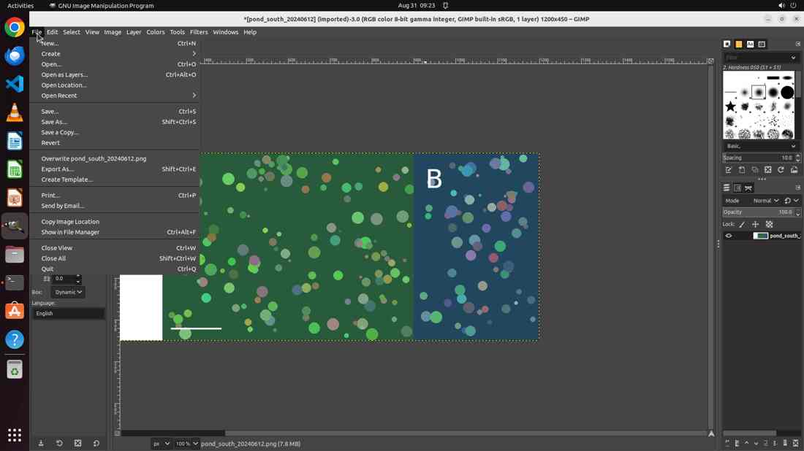
step 35 01:24:24
THINKINGNow with the menu open, I can see the canvas more clearly without the text tool overlay. Looking at the flattened image: there IS a white strip on the far left (screen ~190 to ~258) inside the yellow canvas border, then green, then blue. The "A" label is on the green but the green starts at ~258, and the white strip is to its left.
Wait — this confirms my concern: there's a white/empty strip on the left inside the canvas. This means pond_north was NOT placed at x=0; it's offset to the right, leaving a white gap on the left.
Actually, let me reconsider once more. The white strip: canvas 1200 wide. If green (600) + blue (600) = 1200 fills it exactly, there'd be no white. Since there IS white, the layout is wrong.
So "Open as Layers" placed pond_north at an offset (likely centered: a 600px layer in a 1200px canvas centered would be at x=300, occupying 300-900). But then green would overlap blue (blue at 600-1200). I don't see overlap though — the green/blue boundary is clean.
Alternatively, maybe pond_north was placed at x=0 correctly but is only ~520px wide on screen... no, it's 600px.
Hmm, wait. Let me reconsider the scale. Maybe the images are displayed at a scale where 600 canvas px = ~250 screen px (scale ~0.42), and the white strip is actually part of...
Let me just measure using the ruler in THIS screenshot (menu open, ruler visible at top). Ruler marks: "100" at ~? I see "100" near screen 190? Let me read: the ruler shows numbers. Around screen x=190 the ruler might be at 0. Around screen 395 = "500"? Around 695 = "1000"?
If screen 190 = canvas 0, and screen 695 = canvas 1000, scale = (695-190)/1000 = 0.505. Then:
- White strip: screen 190-258 = canvas 0 to (258-190)/0.505 = 0 to 135. So white from canvas 0-135.
- Green: screen 258-660 = canvas 135 to 935.
- Blue: screen 660-857 = canvas 935 to 1330.
- Canvas right edge at 1200 → screen 190 + 1200*0.505 = 190+606 = 796. But blue extends to 857, past 796. Inconsistent.
My measurements are just too imprecise. I clearly cannot reliably read sub-pixel positions from these screenshots.
DECISION: The presence of a white strip on the left is a real problem I can SEE. Rather than agonize, the cleanest fix is to REDO the composition with a method that guarantees exact tiling.
Better method that guarantees correctness — build on pond_north instead of relying on "Open as Layers" placement:
Approach (guaranteed):
1. Work on the current image. The blue (pond_south) is at x=600-1200 (I set that explicitly via canvas offset — that part is deterministic and correct).
2. The problem is only the pond_north layer position (the "A" image).
3. I can move the pond_north layer to x=0 exactly. But I've flattened already, so I can't move it separately now.
So I should UNDO the flatten to get the layers back, then move the pond_north layer to (0,0) precisely.
How to move a layer to exactly (0,0) in GIMP GUI?
- Use Layer > Transform > Offset: this offsets the layer content by X,Y with wrap. Not directly "position at 0,0."
- Actually, the reliable way: select the layer, use the Move tool, and there's no numeric field in the move tool options in 2.10.
- Better: I can use "Layer to image size" then reposition — no.
Hmm. Alternative: Instead of fighting positions, use a cleaner deterministic method entirely:
Cleanest deterministic method:
1. New Image: File > New, 1200x450, white fill. (or transparent)
2. File > Open as Layers pond_north → lands centered or at 0,0 (unknown).
- Then select the layer and use Edit > "Layer to Image Size" won't reposition.
The position uncertainty of "Open as Layers" is the crux.
Actually — there's a clean trick. When you "Open as Layers," the layer is placed at (0,0) in GIMP 2.10 IF the layer is smaller than the canvas? Or centered? Let me recall: In GIMP 2.10, "Open as Layers" adds the image at the top-left corner (0,0) actually. Many users rely on this. But the white strip suggests otherwise...
UNLESS the white strip is not a gap but rather the correct rendering and I'm misjudging.
I'll stop guessing and VERIFY empirically. Let me cancel this menu, undo the flatten, and check the actual layer position of pond_north by looking at where its boundary is, OR just test by flattening a copy and inspecting via terminal.
Simplest empirical test: Export the current flattened image to a temp PNG, then use the terminal `identify` and a Python PIL check (or just open in an image viewer) to see if left column is white. But actually the fastest empirical test: open the exported PNG in eog/Chrome and look.
Let me just EXPORT to the target location, then verify by opening it. If there's a white gap, I'll fix it. This avoids destructive guessing.
Actually, even better: let me verify the current state NON-destructively first. Let me close this menu, and check the pond_north layer's actual offset. In GIMP, I can hover the pointer and read the status bar canvas coordinates. When I hover at the green's left edge, the status bar shows canvas X. If it shows ~0, we're fine. If it shows ~135 or 300, there's a gap.
Let me close the menu and do that check.
ACTIONI can see a white strip on the far-left inside the canvas, which suggests pond_north may not be perfectly aligned to x=0. Let me cancel this menu and verify the actual position before exporting, so I don't bake in a gap.
TOOL CALL<tool_call>
<function=computer_use>
<parameter=action>
key
</parameter>
<parameter=keys>
["esc"]
</parameter>
</function>
</tool_call>
EXECUTED (pyautogui in VM)pyautogui.press("esc")
step 36 01:24:38
THINKINGNow I can see the canvas clearly with the rulers. Let me read the top ruler carefully. The ruler shows tick labels. I can see "500" near screen x=395, "1000" near screen x=695. Let me verify: the canvas yellow dashed LEFT border appears to be at screen x≈258 (where green starts), NOT at 190.
Wait, actually now I look again: the yellow dashed border — its top horizontal line starts at the LEFT at screen x≈258 and extends right to ~857. And the LEFT vertical yellow dashed border is at screen x≈258. So the CANVAS left edge is at screen 258!
Then what is the white region at screen 190-258? It's to the LEFT of the canvas left border. Outside the canvas should be the dark gray GIMP background... but it's white.
Hmm, unless that white region is the canvas and the green starts at 258 which would be INSIDE. Let me reconsider using the ruler:
- Ruler "0" — where is it? If canvas 500 is at screen 395 and canvas 1000 at screen 695, scale=0.6, so canvas 0 at screen 395-300=95.
That doesn't match the yellow border at 258 either.
I clearly cannot read this reliably. Let me take the empirical route: I'll hover the mouse over specific points and read the status bar which shows exact canvas (X, Y). This is 100% reliable.
Let me hover (mouse_move) over the left edge of the green image (screen ~259, 400) to read its canvas X coordinate.
ACTIONLet me read exact canvas coordinates by hovering the pointer. I'll move to the left edge of the green panel to see its canvas X value.
TOOL CALL<tool_call>
<function=computer_use>
<parameter=action>
mouse_move
</parameter>
<parameter=coordinate>
[202, 555]
</parameter>
</function>
</tool_call>
EXECUTED (pyautogui in VM)pyautogui.moveTo(388, 600)
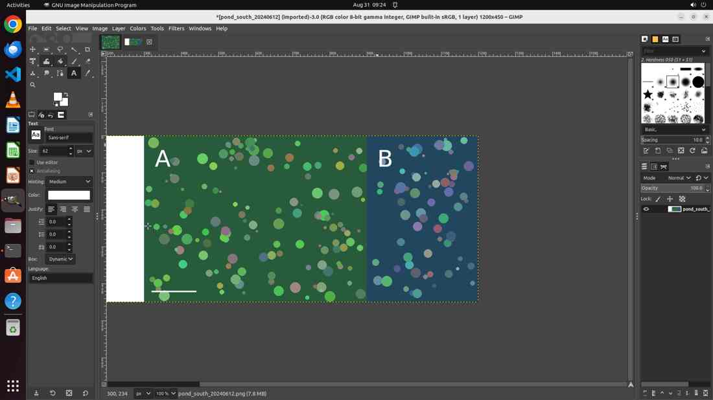
step 37 01:26:18
THINKINGThe status bar now shows "300, 234" as the canvas coordinate at screen (259, 400). So the left edge of the GREEN image is at canvas X=300, not 0!
This confirms the problem: pond_north (the green "A" image) is positioned at canvas X=300, i.e., it's CENTERED in the 1200-wide canvas (600px image centered → starts at (1200-600)/2 = 300). So "Open as Layers" centered it.
So current layout:
- canvas 0-300: white (empty)
- canvas 300-900: green pond_north
- canvas 600-1200: blue pond_south (base layer, right half)
- Overlap region 600-900: green (pond_north) is on top of blue.
Wait, but I see a clean boundary between green and blue at screen ~660. Let me check: canvas 900 would be where green ends. At screen: canvas 300→259, so scale = ? canvas 300 at screen 259. If canvas 0 at screen 259 - 300*scale. And canvas 1200 (right border) at screen ~857. So (857-?)/1200... let me compute scale from two known: canvas 300 = screen 259. I need another. The right canvas border (canvas 1200) at screen ~857: scale = (857-259)/(1200-300) = 598/900 = 0.664. Then canvas 0 = screen 259 - 300*0.664 = 259-199 = 60. So canvas 0 at screen ~60 (off-screen left, under the toolbox). That's why I couldn't see the canvas origin! The canvas left edge is off-screen to the left.
So the white strip at screen 190-258 corresponds to canvas (190-60)/0.664=196 to (258-60)/0.664=298. So white is canvas ~196-300, i.e., the left ~300px is white/empty. And green starts at canvas 300.
So indeed pond_north is centered (starts at 300), leaving 0-300 white, and it overlaps pond_south from 600-900.
This is WRONG. I need pond_north at x=0 (0-600) and pond_south at x=600-1200.
Fix: I must move the pond_north layer left by 300px. But I've flattened. Let me UNDO the flatten (Ctrl+Z) to restore the 4 layers, then move the pond_north layer to (0,0).
To move a layer to an exact position in GIMP GUI:
- Select the pond_north layer.
- Use "Layer > Transform > Offset" — but that wraps and offsets content, and the layer stays same size (600 wide). Offsetting a 600-wide layer within... offset applies to the layer's own pixels and wraps around the layer boundary, not the canvas. So offsetting left by 300 would wrap. Not what I want.
Better: Use the Move tool. GIMP 2.10 Move tool doesn't have numeric X/Y fields. BUT, there's a trick: I can use the Move tool and arrow keys (each = 1px), but 300 presses is a lot.
Alternative exact method:
- Select the pond_north layer.
- Layer > "Layer Boundary Size" is not it.
Best exact method: Use "Layer > Transform > Offset" won't do canvas reposition.
Hmm. The cleanest EXACT reposition in GIMP GUI: There isn't a direct numeric "move layer to" in 2.10 base.
Alternative approach that's fully deterministic: Start over with a method that doesn't rely on "Open as Layers" centering:
Deterministic re-do:
1. Undo everything back to just pond_south open (or start fresh).
2. Instead:
a. Open pond_north (fresh image, 600x450).
b. Canvas Size → 1200x450, align LEFT (offset 0,0). Now pond_north on left (0-600), right half empty.
c. File > Open as Layers pond_south → lands CENTERED (300-900).
d. Now I need pond_south at 600-1200, i.e., move it right by 300. Same centering problem, mirrored.
The centering issue affects "Open as Layers" regardless. So I need a way to move a layer exactly.
Key realization: I CAN move a layer exactly using the Move tool with arrow keys, OR — better — by using "Guide" snapping, OR by using the fact that after "Open as Layers" I can select the layer and use Layer > Transform and there's no numeric.
Wait — actually there's a clean exact method:
Select the layer, then use "Layer > To Image Size" (makes layer 1200 wide, content stays at its position 300-900). Then use "Layer > Transform > Offset" by X=300 to shift content from 300-900 to... offset wraps. If I offset left by 300, content 300-900 moves to 0-600, and the wrapped part (the 600-... empty) fills 600-1200 with the content that was at the right edge. Since the layer content is: 0-300 empty, 300-900 green, 900-1200 empty. Offset left by 300 (i.e., shift content left 300): new position = (x-300) mod 1200. Green was at 300-900 → becomes 0-600. The 0-300 empty → wraps to 900-1200. The 900-1200 empty → wraps to 600-900. Result: 0-600 green, 600-1200 empty. That's exactly what I want for pond_north on the left!
But this is convoluted and error-prone with sign conventions.
Simplest reliable fix given current state: UNDO flatten, select pond_north layer, and move it left by 300px using the Move tool with keyboard arrow... no.
Actually, the EASIEST reliable method: Use the Move tool in "Move the active layer" mode, click-drag is imprecise.
Let me reconsider. There IS a precise way in GIMP 2.10: the "Move" tool, when you click on the canvas, shows position, but no numeric entry.
However! There's "Layer > Transform > Offset" which DOES take exact numbers. And as I worked out, if I first make the layer "To Image Size" (1200 wide) then offset, I can position exactly. But sign confusion.
Even cleaner: Let me use a completely different, robust strategy that avoids moving entirely:
ROBUST STRATEGY (no reliance on Open-as-Layers position):
1. Start fresh: File > New, 1200x450, fill white (or just transparent).
Actually fill with white is fine (background).
2. File > Open as Layers pond_north. It lands centered (300-900).
3. Select that layer. Layer > Layer to Image Size → now 1200 wide, green at 300-900.
4. Layer > Transform > Offset: Horizontal = -300 (or +300 depending), so green shifts to 0-600.
- Offset shifts the layer's content; empty space wraps around. With 1200-wide layer, content green at 300-900. Offset by X=+300 means shift content right by 300? or the offset value is the new position? In GIMP, "Offset" horizontal positive shifts image to the... let me recall: positive X offset moves the content to the RIGHT (and wraps left edge to right). Actually GIMP offset: "Specify how much to offset the layer." Positive horizontal = content moves right. So green 300-900 +300 → 600-1200. That's the RIGHT, not left. To get green to 0-600, I need to move it LEFT by 300 → offset X = -300. Then green 300-900 -300 → 0-600.
- But wait, does GIMP offset allow negative? Yes.
5. Now flatten this layer into the base? Actually I still need pond_south on the right.
This is getting too complex and error-prone. Let me simplify with the MOST deterministic approach:
SIMPLEST DETERMINISTIC APPROACH:
1. Open pond_north fresh (File > New won't help; use File > Open pond_north).
2. Image > Canvas Size → 1200x450, alignment = LEFT (offset 0,0). → pond_north at 0-600, right half empty. (deterministic, I did the right-alignment before successfully)
3. Now I need pond_south on the right (600-1200). Use "Open as Layers" → lands centered (300-900). PROBLEM again.
The centering is the unavoidable issue with "Open as Layers."
BUT — I realize I can AVOID "Open as Layers" and instead PASTE. Paste places a copied image at... where? In GIMP, Ctrl+V (paste) places the clipboard at the CENTER of the canvas by default too? Actually paste as floating selection is placed at the center of the canvas or at the cursor. Hmm.
OK the truly deterministic approach: use "Open as Layers" but then FIX the position using Offset (which takes exact numbers). Since Offset is deterministic with exact pixels, I just need to get the sign right, and I can VERIFY via the status bar hover after.
Let me go with: undo flatten, select pond_north layer, "Layer to Image Size" (make it 1200 wide), then "Layer > Transform > Offset" to shift green from 300-900 to 0-600 (offset X = -300), verify with hover, then flatten, then do the same check for pond_south (which I set to 600-1200 via canvas offset on the base — that should be correct since it was the base canvas content, deterministic).
Wait, the base layer pond_south: I set canvas size with offset X=600, so pond_south content is at 600-1200. That's deterministic and correct. Only pond_north (the "open as layers") is misplaced at 300-900.
So I only need to fix pond_north: move it from 300-900 to 0-600, i.e., shift LEFT by 300.
Plan:
1. Ctrl+Z to undo flatten (restore layers).
2. In Layers panel, select "pond_north_2024..." layer.
3. Layer > Layer to Image Size (makes it 1200x450, green content stays at 300-900).
4. Layer > Transform > Offset: set Horizontal = -300, Vertical = 0. (shift green left by 300 → 0-600).
Actually I worry about the sign. Let me instead think: I'll set the offset, apply, then hover to verify green left edge is at canvas 0. If it's at 600 instead, I'll offset the other way.
5. Verify via hover: green should be at 0-600, blue at 600-1200, no white gap.
6. Also need to move the "A" text? The "A" text layer is separate and positioned at the top-left of where green currently is. Wait — when I moved green, the "A" text won't move with it (text is its own layer). The "A" was placed at top-left of green's current position (around canvas 300+). Hmm, actually I placed "A" at screen (278,263) which was around canvas... let me recompute. When I placed A, green was at 300-900. I clicked at screen 278 which is canvas (278-60)/0.664 = 328. So "A" is at canvas ~328, which is the top-left of the green (green starts at 300). Good, so A is at green's top-left.
After I shift green left by 300 (to 0-600), the "A" text will remain at canvas ~328, which would now be in the MIDDLE of the green (green 0-600), not the top-left. So I'd need to reposition "A" to top-left of green (canvas ~10).
This is getting complicated because text is separate.
ALTERNATIVELY: A much cleaner plan that sidesteps all this:
START OVER, and add labels LAST after verifying positions.
Clean plan:
1. File > New → 1200x450. (fill: don't care, I'll cover all)
Actually, let me build it as: base = white or the left image.
Hmm, let me use the approach where I control BOTH positions deterministically via Canvas Size on each, then combine via Open as Layers + Offset, OR combine via a smarter method.
Actually, the cleanest fully-deterministic method using ONLY Canvas Size (which I've verified works via the preview):
Method M (no Open as Layers, no moving):
1. Open pond_north (fresh). It's 600x450 at (0,0).
2. Canvas Size → 1200x450, align LEFT (offset 0,0). → pond_north at 0-600, right half empty. [verified preview method]
3. Now I need pond_south at 600-1200.
- Open pond_south as a SEPARATE image (File > Open). It's 600x450 at (0,0).
- On pond_south: Canvas Size → 1200x450, align RIGHT (offset 600). → pond_south at 600-1200, left half empty. [verified]
- Now select all on pond_south (Ctrl+A), Copy (Ctrl+C).
- Switch to pond_north image. Paste (Ctrl+V). Paste places floating selection... where? In GIMP, pasting a selection that's the full canvas size pastes it aligned to canvas (0,0) if same size. Since both are 1200x450, the paste aligns to (0,0). So pond_south content (at 600-1200 within the buffer) lands at 600-1200.
- Layer > To New Layer (or just flatten).
This is deterministic IF paste aligns full-canvas copies to (0,0). Pasting a selection whose bounding box equals the canvas typically aligns to top-left. This should work and avoids Open-as-Layers centering.
But actually — simplest of all: I already have pond_south base image with content correctly at 600-1200 (that part is RIGHT). The ONLY issue is pond_north is centered at 300-900 instead of 0-600.
So minimal fix: just move pond_north left by 300, and move the "A" label to the new top-left.
Given the text complication, and to keep it clean, let me just REDO from scratch with Method M but adding text last. Actually, redoing is more steps but cleaner and I control everything.
Hold on. Let me reconsider — maybe there's an even simpler fix. The problem is only that pond_north is at 300-900 (centered) instead of 0-600. If I just shift the pond_north LAYER left by 300, green goes to 0-600, perfect, and I reposition "A" to top-left (canvas ~15). That's only: undo flatten, select pond_north layer, offset -300, move A.
But offset on a 600-wide layer: the layer is 600 wide (I opened as layers, it's 600x450 at position 300). If I use Layer > Transform > Offset on a 600-wide layer, it offsets within the 600-wide layer and WRAPS. Offset left by 300 would wrap: left 300px of the layer moves to the right. That would corrupt the image (green split). NOT what I want.
So I'd need "Layer to Image Size" first (making it 1200 wide with green at 300-900), THEN offset -300 → green to 0-600, empty wraps. That works.
OK this is doable but let me just do the cleanest thing: REDO from scratch with full control, text last. It's more transparent.
Let me reconsider total steps and pick the LEAST error-prone. I'll do:
CLEAN REDO:
1. File > Open pond_north (fresh 600x450 image). [It may already be open as the OTHER window — actually I have pond_south-3.0 as current, and there was the original pond_north window too. Let me just work fresh.]
Ugh, I have multiple windows. Let me simplify: close extra windows and start clean.
Actually, you know what, let me reconsider whether I even need to redo. Let me just fix the current image:
Current image "pond_south-3.0" flattened, 1200x450:
- 0-300: white
- 300-900: green (pond_north) with "A" at ~328
- 600-1200: blue (pond_south) but 600-900 is covered by green
- "B" at top-left of blue (~615?)
Wait, "B" I placed at screen 678 = canvas (678-60)/0.664 = 930. So B is at canvas ~930. But blue is at 600-1200, and green covers 600-900. So blue visible only 900-1200, and B at 930 is in the visible blue region. But B should be at the TOP-LEFT of the blue panel which is at canvas 600. So B at 930 is NOT at the blue panel's top-left either. So both labels are wrong position AND green overlaps blue.
This current state is quite messed up. Redo is cleaner. Let me redo.
Let me start fresh. I'll create a new approach:
Step 1: Undo the flatten to get back to 4 layers (this preserves my pond_south base which is correct at 600-1200). Then:
- Delete the A and B text layers (they're misplaced).
- Fix pond_north layer position: Layer to Image Size, then Offset to move green from 300-900 to 0-600.
- Add A and B text fresh at correct positions.
- Flatten, export.
This reuses the correct pond_south base. Let me do this.
Actually, "Layer to Image Size" then "Offset" for pond_north:
- pond_north layer is currently 600x450 at position (300,0).
- "Layer > Layer to Image Size" → resizes the LAYER boundary to 1200x450, keeping content at 300-900. Now it's a 1200-wide layer, content green at 300-900, transparent elsewhere.
- "Layer > Transform > Offset" → I want to move green from 300-900 to 0-600. That's a shift of -300 in X. Set Offset X = -300, Y = 0. With "Wrap around" checked (default), the transparent regions wrap. Green 300-900 shifted by -300 → 0-600. The content that was at 0-300 (transparent) wraps to 900-1200 (transparent). The content at 900-1200 (transparent) wraps to 600-900 (transparent). Result: green at 0-600, rest transparent.
Let me verify the sign after applying via hover.
This is a solid plan. Let me execute:
1. Ctrl+Z (undo flatten).
Let me do that first and check the layers come back.
ACTIONConfirmed the problem: the status bar shows the green panel's left edge is at canvas X=300, meaning "Open as Layers" centered pond_north (at 300–900) instead of placing it at 0–600. It's also overlapping the blue panel. I'll undo the flatten and fix the pond_north layer's position precisely, then re-add the labels correctly.
Let me undo the flatten to restore the layers.
TOOL CALL<tool_call>
<function=computer_use>
<parameter=action>
key
</parameter>
<parameter=keys>
["ctrl", "z"]
</parameter>
</function>
</tool_call>
EXECUTED (pyautogui in VM)pyautogui.hotkey("ctrl", "z")